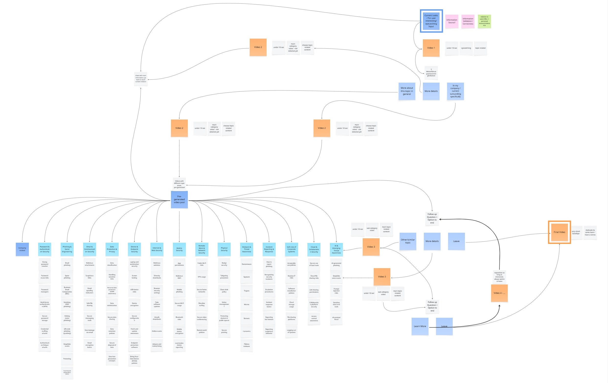
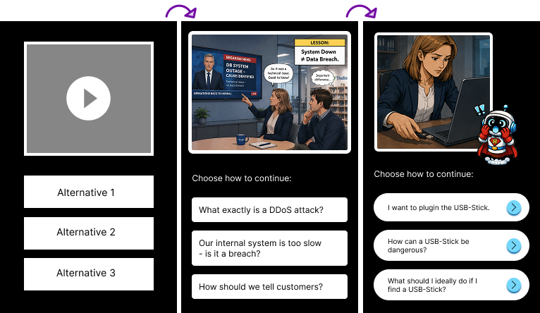
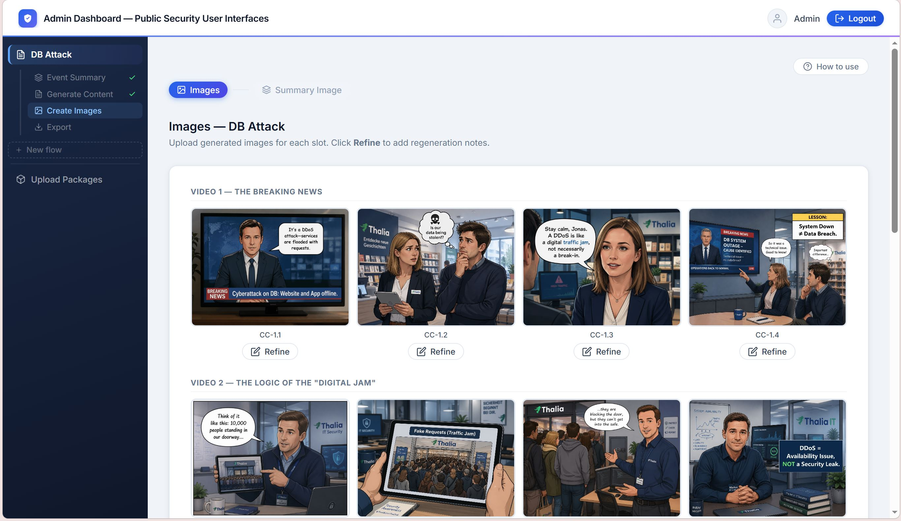

Security training exists.
Engagement & awareness doesn't.
In collaboration with the IT security department of a ~7,000-employee company, this thesis explores how four public displays — installed across their office buildings — can deliver security awareness content that employees actually absorb. No mandatory training. No extra effort. Just relevant moments built into their everyday environment.
"Design and evaluation of an AI-driven video generation framework for IT security awareness content on public displays"
Starting with what the research told me.
Security awareness works through passive, repeated exposure — not effortful training. The core finding: existing formats fail not because employees don't care, but because they compete for attention rather than working with it.
- Needs to be embedded into daily routines
- Supports passive learning & repeated exposure
- Ongoing process, not a one-time intervention
- Should be participatory spaces
- Encourage interaction, social acceptability & lightweight engagement
- Motivation via curiosity, challenge, feedback & playfulness
- Immediate feedback, clear affordances & minimal effort
- Playfulness with low social risk extends engagement & discovery
- Visible responsiveness & clarity feel reliable
- Touchless reduces hygiene concerns & social pressure
- Movement, gesture & gaze work well publicly
- Simple, iconic gestures most successful
Identifying the problems of public displays ...
Before designing a solution, the research surfaced a clear set of recurring problems across security awareness, engagement, and interaction design in public contexts.
- Programs often don't reliably change behavior
- Security is disconnected from daily environments
- Users rarely seek security information
- Behavioral outcomes remain weak
- Low engagement with public displays
- Display blindness — screens get ignored
- Social inhibition reduces participation
- Attention thresholds are underestimated
- Interactions feel awkward or high-commitment
- Supported interactions are unclear
- Public interaction is often poorly designed
- Context & social norms are ignored in evaluations
... and understanding constraints good design can solve.
- No Sound / No Touch
- Body movement & position tracking
- Gesture navigation
- Ideally touchless interaction
- Short Attention Spans
- Low-threshold entry
- Short, step-by-step content
- Immediate visual reward
- Social Embarrassment
- Subtle, non-obvious body movement
- Private-feeling engagement
- Optional single-user mode
- Diverse User Groups
- Accessibility-first design
- Clear visuals & simple instructions
- Multiple scenario categories
- Adjustable complexity
- Physical Display Limitations
- Important content centered
- Large, readable design
- Minimal clutter
- Display-aware sizing
- Workplace Environment
- Professional but engaging tone
- Gamification without childishness
- Casual repeated exposure
- Quick interactions
To succeed, a public security user interface should therefore be: Low-threshold · Socially comfortable · Contextual · Accessible · Playful · Quick
Narrative micro-learning through
AI-generated content.
The framework dynamically generates interactive security narratives —
each a five-step story in which users shape how their scenario unfolds.
Opportunistic Engagement
Stories surface at the right moment — triggered by context, not by a schedule. Position-aware design and a recurring character draw users in and make them want to see what happens next.
Narrative Decision System
Each scene ends with three choices that steer the story. Five image sequences play out in different orders depending on what the user decides.
AI Content Scalability
Modular story structures and reusable prompts enable AI to generate consistent narratives and visuals at scale — no hand-crafting required for each scenario.
Building from framework to the first interface.

Structured exploration — topic research, literature synthesis, and prompt engineering experiments to understand AI content generation constraints and opportunities.

Interactive interface for the public screen — evolved from live video sequences to a comic-style stop motion narrative format with a recurring guide character accompanying users through the flow.

Backend & Frontend for content creators — generation of story narrative & image prompts per scenario, with export of image packages and structured JSONs for display deployment.
The road to validation.
Research and initial framework design are complete. The focus now shifts to real-environment testing and iterative refinement before the thesis submission.
Literature review, mind mapping, and problem space definition.
Narrative decision framework, AI content design, and structure & concept definition.
First prototypes built, informal walkthroughs conducted, refining narratives, prompts and interaction flows.
Real-environment deployment, pilot & field study, adjustments according to feedback.
Thesis write-up and submission until October 2026.
Attention can't be forced. Every medium has its own rules for earning it — and designing to those rules is what turns a passing glance into real interaction.